Table of Contents
For the first time in the seven-year span of Mike Sando’s quarterback tiers survey Aaron Rodgers was not ranked as the NFL’s top quarterback. However, the fifty NFL coaches and evaluators who participated in the survey have not observed much of a drop off. In the 2020 survey Rodgers received a tier 1 vote from 46 respondents and finished 3rd overall in the ranking.
Fellow NFL players recently gave Rodgers his lowest ever ranking in the ten-year history of the annual NFL Top 100 poll following the 2019 season. Similar to the respondents of Sando’s survey, players still view Rodgers as a near top tier player. He earned the 16th overall ranking and was the 6th highest ranked quarterback in the 2020 poll.
PFF grades tell a similar but not quite as rosy of a story. From 2008, Rodgers first season as a starter, to 2014 his PFF grade was never worse than 6th best in the league. In 2015 his PFF grade fell out of the top 10 but quickly bounced back to top 3 in 2016. After an injury shortened 2017 season PFF graded Rodgers as their 5th and 7th best in 2018 and 2019 respectively.
If people in the NFL still consider Rodgers a near top talent and PFF grade has him slightly outside the top 5 why are the efficiency stats so much more sour on him recently? Most of the advanced efficiency metrics rank the future Hall of Famer closer to league average than top 5. Expected Points Added (EPA), ESPN’s Quarterback Rating (QBR), Football Outsiders Defense-adjusted Value Over Average (DVOA), and Completion Percentage Over Expectation (CPOE) suggest Rodgers hasn’t been a tier 1 quarterback since 2016.
The Computer Cowboy’s EPA + CPOE composite metric on rbsdm.com ranked Rodgers as the 16th best since 2016, one spot below Ryan Fitzpatrick and three spots below Kirk Cousins.
Football Outsiders DVOA placed Rodgers outside the top 10 in each of the last three seasons. QBR lists Rodgers one spot below Andy Dalton in 2018 (16th) and one spot ahead of Jacoby Brissett in 2019 (20th).
Efficiency Metrics
If you are not familiar with EPA, QBR, DVOA, or CPOE please check out the below.
- EPA
- EPA
- QBR
- DVOA
- nflfastR’s CPOE (Completion Percentage Over Expectation) forms an expectation of how likely a pass is to be completed based on factors we can observe like how far down the field the pass was thrown, whether the pass was thrown to the left, middle, or right, or whether or not it was thrown in a dome, and compares it to what the passer’s actual completion percentage.
Rodgers career as seen by EPA, CPOE, and QBR
The below graph is plotting the average expected points added per dropback from Rodgers most recent 300 dropbacks over the course of his career. When the white line and yellow fill are near .20 on the Y axis it means Rodgers last 300 dropbacks produced an EPA average similar to one that the 5th best in the game would have earned. The further above or below the .20 mark it goes it means he was that much better or worse than the 5th best.
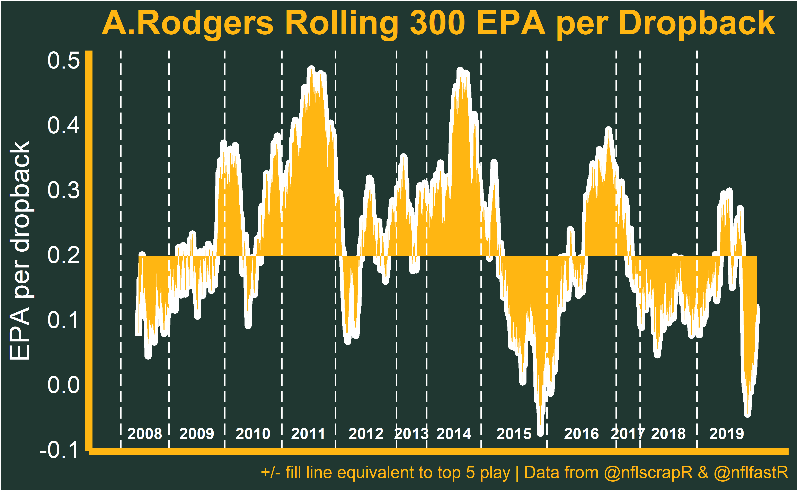
This tells us Rodgers EPA was tier one level for over 71% of his dropbacks through 2014. We can see the highs were are really high as Rodgers doubled the EPA average of the 5th best at times. Remarkably, Rodgers was never outside top 5 play in his 2011 and 2014 MVP seasons. The lows were never very low either. Rodgers EPA average only fell below the .10 mark for less than 4% of his 4,600 plus dropbacks prior to 2015. The only similarly sustained levels of dominance I can see in the nflfastR library are a couple different stretches from Peyton Manning and the Patrick Mahomes Experience.
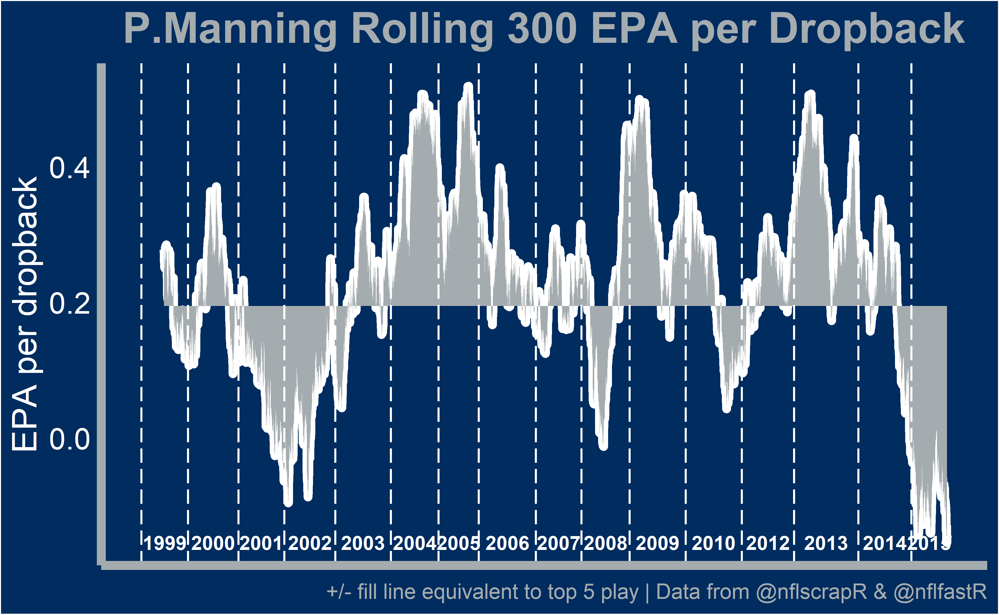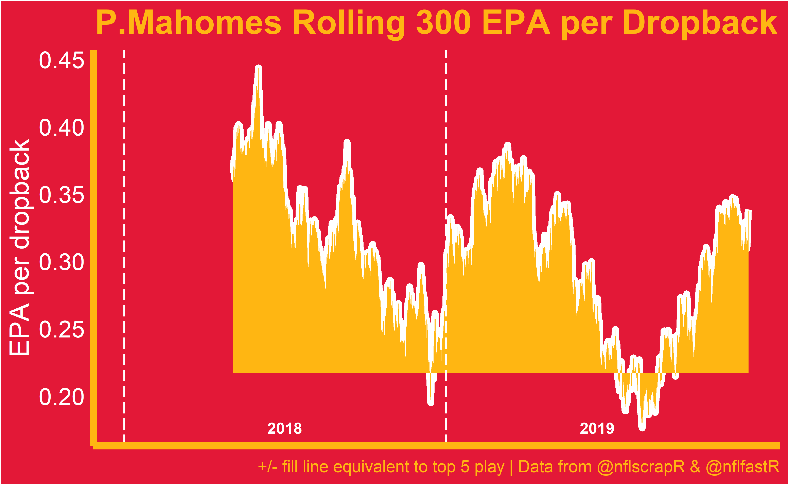
After 2014 we see Rodgers rolling average collapse to an alarming low in 2015, skyrocket in 2016 during the “run-the-table” stretch, and then remain below top 5 play outside of a couple week stretch in 2019.
CPOE mostly matches what we saw in the EPA per dropback plot. Rodgers CPOE was generally among the game’s elites through 2014 but has been rather mediocre other than the 2016 run since.
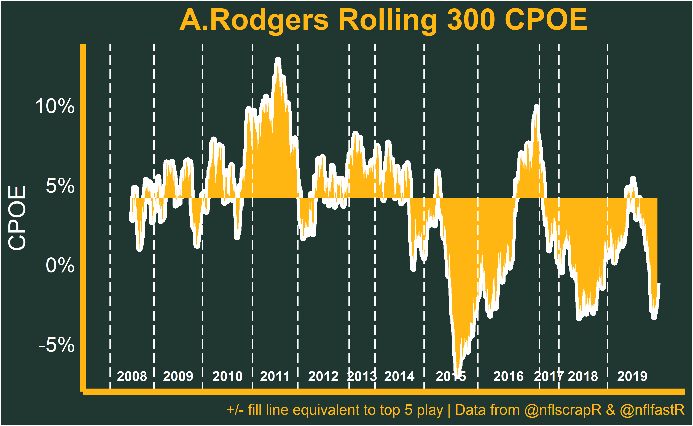
ESPN’s QBR is scaled to equate a 50 rating with average play and Pro Bowl-level play at 75. Again we see Rodgers hasn’t been viewed as one of the games best by QBR in recent seasons. His 2011 season ranks as the 3rd best QBR season of all time above 2019 Lamar Jackson and 2018 Patrick Mahomes. However, unlike respondents of Sando’s survey and the Top 100 poll, QBR downgraded Rodgers to marks well below that the past two seasons.

We are assigning EPA and CPOE to Rodgers in the above plots. However, a more apt description would be EPA or CPOE of the Packers passing offense in plays where Aaron Rodgers was the quarterback. Coaching, playcalling, and supporting cast are responsible for some portion of the output but we do know the quarterback plays a very large role.
Digging Deeper
What else can the publicly available data tell us about what part of Rodgers game is declining in the eyes of advanced efficiency metrics? One feature in the data we can use to look at EPA and CPOE at a more granular level is air yards. The air yards a pass gets assigned is the distance the ball traveled in the air past the line of scrimmage (not the distance traveled from the QBs release to the receiver).
If we bin air yards into into deep, intermediate, short, and behind the line of scrimmage passes we find CPOE has regressed at every level of the field in the past five years.
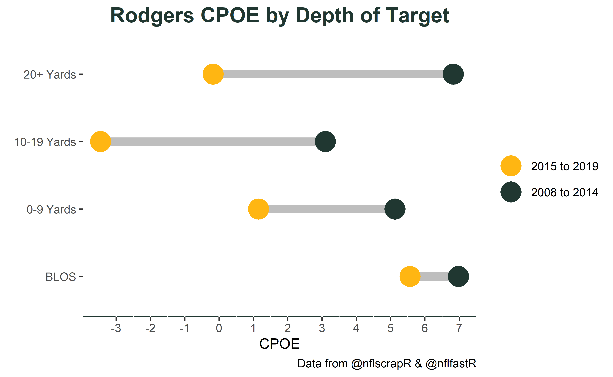
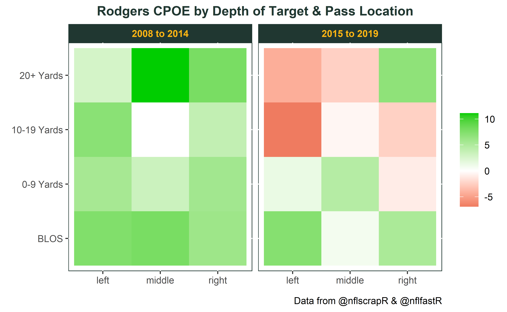
The 2008 to 2014 figures were absurdly good so some regression would be expected. However, over the last five years passes in the 10-19 and 20+ yard ranges are being completed at rates lower than we would expect while the 0-9 yard range is barely positive. In fact, below we see that Rodgers worst four seasons in the 0-9 yard range and 10-19 yard range (the two most frequently targeted regions) have come in the last five years.
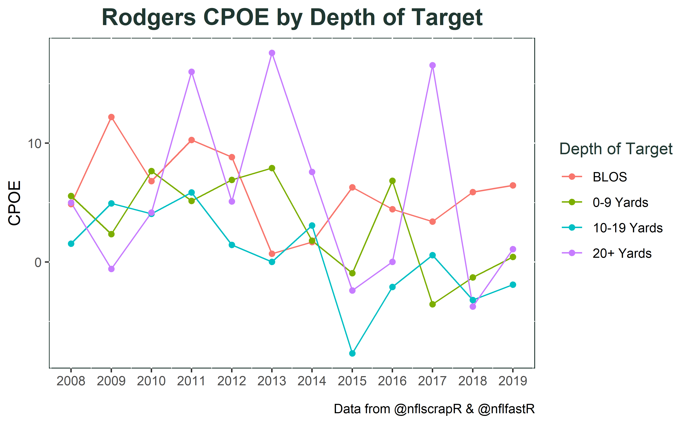 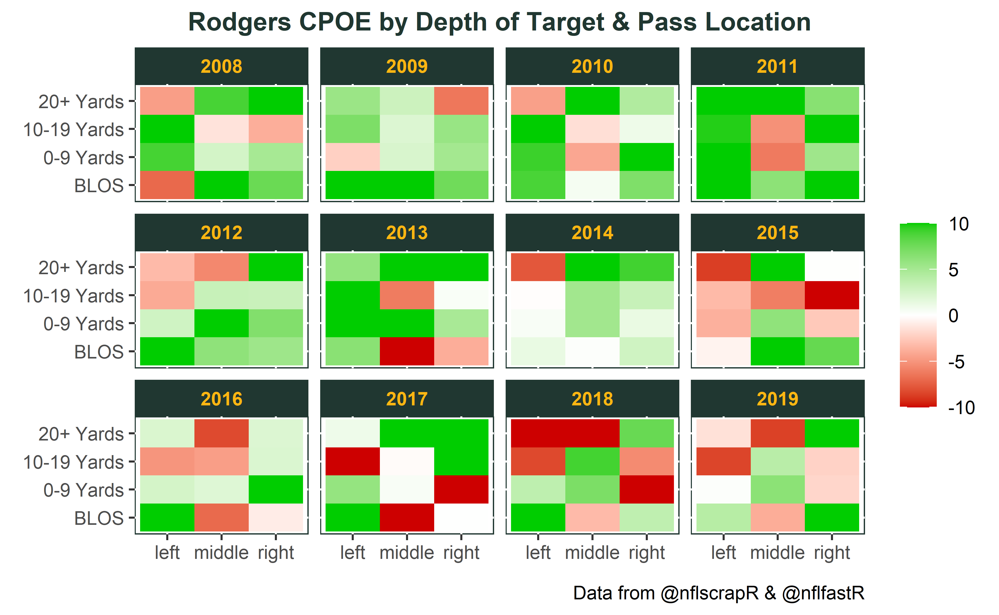
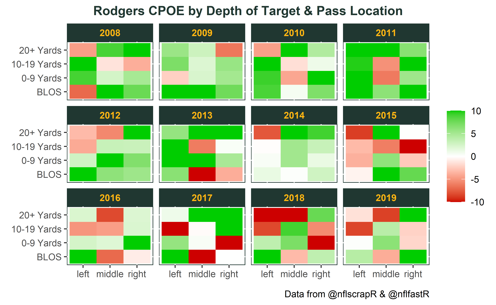
Completing less passes than one would expect at every level obviously translates to lower EPA at every level of the field. Since 2015 deep passing EPA per dropback has decreased by 27% (.74 to .54), intermediate passing has decreased 25% (.61 to .45), and short passing efficiency has decreased a whopping 40% (.30 to .18).
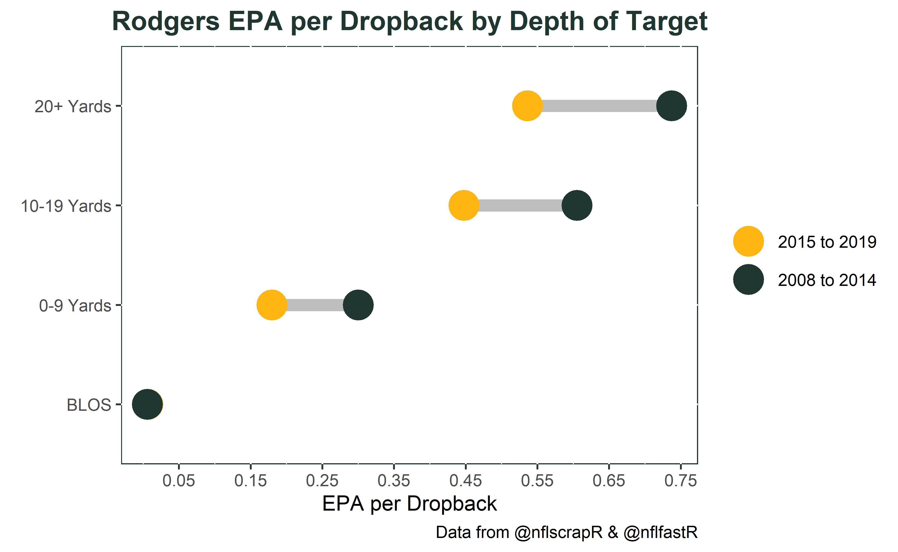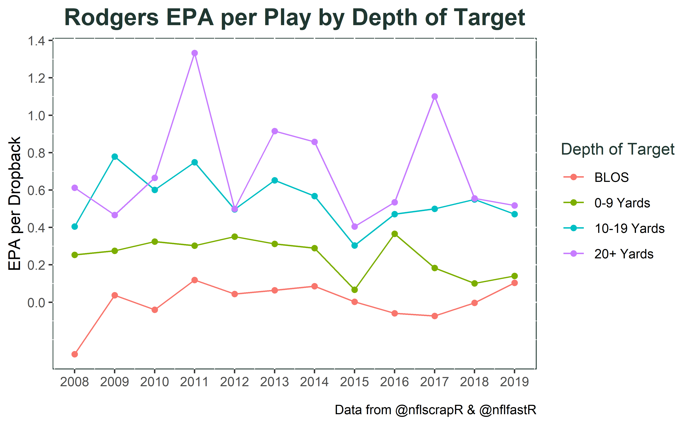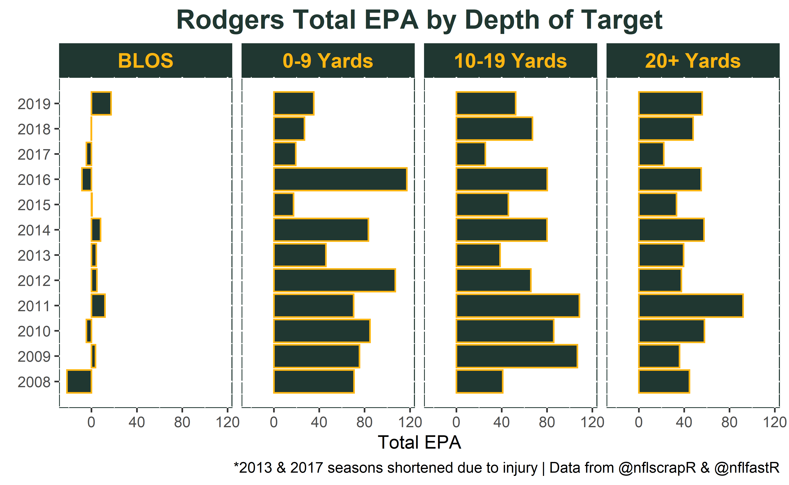
Supporting Cast
Sando’s article and his recent appearance on the Bill Barnwell Show suggest the NFL community hasn’t seen a significant deterioration of Rodgers skills and are assigning most of the statistical drop off to the supporting cast. It’s very hard to disentangle the strength of the scheme and the supporting cast from EPA and CPOE numbers. Nevertheless, let’s see what we can glean from the available data.
The below plot looks at EPA per target and CPOE by targeted receiver for passes that went past the line of scrimmage. Targets from 2008 to 2014 show as white dots and targets from 2015 to 2019 are in yellow. Players with fewer than 50 targets have been removed and the size of the dot corresponds to the number of targets the player received.

We see targeted receivers from ’08 to ’14 are largely clustered in the upper right meaning those targets were completed more frequently than we would expect and they were very efficient in terms of EPA. The only targeted receivers in that quadrant from ’15 to ’19 are Jordy Nelson, Davante Adams, and Allen Lazards 50 targets. The dispersion of yellow and white dots shouldn’t be a surprise given what we know about Rodgers numbers as a whole over those time frames. To give this some more context let’s think about the situation Rodgers came into in 2008.
2008 - 2014
Rodgers spent the 2005 through 2007 seasons on the bench behind Favre learning Mike McCarthy’s offense. Donald Driver was entering his age 33 season coming of back-to-back Pro Bowl selections in 2006 and 2007. Late 2006 2nd round selection Greg Jennings was entering his 3rd season after emerging as a blossoming star while posting an impressive 11 yard per target 12 touchdown season in ’07. Late 2007 3rd round pick James Jones was entering his second season. Green Bay general manager Ted Thompson also invested an early 2nd round pick and late 3rd on pass catchers in the 2008 draft by selecting Jordy Nelson and Jermichael Finley.
These five receivers accounted for nearly 80% of Rodgers targets in his first three seasons en route to the Super Bowl XLV victory in February 2011. A few months later in 2011 Thompson & Co spent another 2nd round pick on a wide receiver (Randall Cobb). The continuity from the aforementioned five pass catchers and the addition of Cobb helped spur Rodgers to one of the best statistical seasons ever in 2011. In a 2011 ESPN The Magazine article Rodgers spoke to what helped contribute to his phenomal accuracy. He was quoted saying the following:
“Learning to time up my drop with each route has been a big thing for me. It allows me to throw the ball in rhythm and hit the same release point with every throw, meaning that no matter what else is happening, the ball comes out on a similar plane. That’s when accuracy comes.”
He went on to say the fundamentals come first, “…then you have to become an expert in your own offense. Then you can get to a point where you’re attacking instead of reacting. Rich Gannon told me this back in 2006: You’ll know you’re at a good level by the things you’re thinking about when you break the huddle. If you’re thinking about your own guys – what routes they have, who has what – you’re not thinking about the right things. When I break the huddle now, I know what my guys are doing. I know the areas they’re going to be in.”
Rodgers efficiency was largely maintained over the next three seasons despite losing Driver and Jennings after the 2012 season along with Jones and Finley after the 2013 season. Rodgers added his 2nd MVP award in 2014 when Nelson earned a career high number of targets and another 2nd rount talent, Davante Adams, was added to the mix.
2015-2016
Green Bay’s passing efficiency dropped to abysmal levels in 2015 after Nelson tore his ACL in the preseason. The efficiency didn’t immediately return to elite when Nelson came back in 2016 as the Packers sputtered out to a 4-6 start. Doug Farrar wrote about Green Bay’s passing game regression in October 2016.
“Over time, Rodgers has overcompensated for the things that offense doesn’t provide to the point where it’s broken him as a mechanically consistent player.”
“Rodgers appears to be operating under the belief that he must transcend a faulty offense with his own impressive physical attributes.”
Greg Cosell also commented “What continues to stand out is that his accuracy is not what it once was. Precise ball placement is what made him special, and that attribute has been very erratic going back to last season. And now, it’s getting worse. Now, he’s missing wide-open receivers.”
If you refer back to Rodgers moving average EPA and CPOE plots the passing offense was not just below top 5 but considerably lower. It is fair to say Rodgers probably not at a “good level” when Nelson exited the line up and he didn’t trust what his guys were doing or where they were going to be. However, after Rodgers “run-the-table” remarks something changed and the offense turned in one of the better stretches of Rodgers career in terms of efficiency over the next nine games.
2017
In 2017 Rodgers EPA and CPOE metrics were okay before the collarbone injury in week 6 (.16 EPA/dropback and CPOE +2.2%). He did return several weeks later in an effort to make a run at the playoffs but had a very poor performance which. Ultimately the 301 dropbacks placed Rodgers 14 overall in the rbsdm.com EPA and CPOE composite metric.
2018
Passing game continuity took a hit in 2018 as Jordy Nelson moved on to the Raiders. Adams and Cobb returned but the front office hadn’t been using draft capital on pass catchers like they did earlier in Rodgers career. Since taking Adams in the 2nd round of the 2014 draft Green Bay used two 5th and two 7th round selections on pass catchers from ’15 to ’17. Jimmy Graham was signed to a big deal entering his age 32 season two years removed from a torn patellar tendon to fill some of the void. Three receivers were also added in the 2018 draft although the earliest selection was in round 4 at pick 144. To make matter worse Rodgers suffered a tibial plateau fracture and a sprained MCL in week 1. The shakeup in personnel and coaching compounded by injury surely impacted the timing and rhythm and subsequent efficiency numbers.
Another thing that doesn’t help efficiency stats are throwaways. The most glaring numbers from 2018 the eye popping number of throwaways. Per PFF Rodgers threw the ball away once every 26 dropbacks from 2008 to 2017 but jumped to an astonishing once every 11 dropbacks in 2018.
PFF Steve and Sam posited on the PFF NFL Show that this is likely the reason PFF grades have been more favorable to Rodgers than offensive efficiency metrics because of how much weight is placed on avoiding turnover worthy plays. PFF grade penalizes Rodgers much less for throwaways than EPA or CPOE would.
If we refer back to the initial plot we see Rodgers ended 2018 with a rolling 300 play average of .13 per play. In early 2019 under LaFleur Rodgers rolling average crept back into elite territory by the end of the week 8 matchup against Kansas City. Coincidentally, Rodgers posted an astonishing 95.5 QBR, .96 EPA per dropback, and perfect 158.3 passer rating in week 7 immediatly after Ben Baldwin’s No longer elite article on Rodgers. But then the next 300 dropbacks that cover week 9 at the Chargers to mid-game week 17 at Detroit we see Rodgers rolling average collapse down to -.05 per play.
2019
Prior to the 2019 Season Josh Hermsmeyer posed the question Are We Sure Aaron Rodgers Is Still An Elite Quarterback? at fivethirtyeight. Hermsmeyer noted CPOE decline starting in 2015 and speculated that the Packer’s underperformance could be due to a subpar play-action passing game. From 2015 to 2018 Hermsmeyer found Rodgers QBR was 32nd out of 41 in Raw QBR and could possibly be bolstered by a better play-action game with LaFleur in 2019.
I charted play-action and personnel info in 2019 to pair this with the EPA and CPOE play by play data from nflscrapR to see how this played out. Rodgers CPOE on play-action was +5.6% as opposed to 0.2% for non play-action passes, however, EPA per play was the same at .17. This would suggest Rodgers wasn’t hitting the explosive downfield shots any more frequently on play-action. One glimmer of hope for Green Bay fans entering 2020 is that EPA per play on play-action plays with 2 or fewer wide receivers on the field was .24 per play and .08 per play in 11 personnel.
What’s next?
The numbers tell us Green Bay has not completed passes and moved the chains at the rate an elite offense would lately. In 2019 we saw Rodgers flirt with elite level efficiency numbers through the first 8 weeks. But that all came crashing down and we rapidly approached the abysmal 2015 levels in later weeks.
Maybe Rodgers will master the offense and get back to attacking instead of reaction and 2020 brings a big year two leap. Maybe without several elite weapons and an intimate comfortability with the scheme Rodgers just doesn’t see things well and we shouldn’t expect any bounce in year two. Maybe the confluence of factors that contributed to the previous elite play will never come back and we will see flashes of brilliance littered with throwaways.
I don’t have the data or the knowledge to say whether or not Rodgers isn’t pulling the trigger when he should be. Alex Rollins of SB Nation took a film based approach to answering this question and noted Rodgers is not consistently operating within the structure of the offense and is sacrificing efficiency to extend plays but isn’t hitting them. Maybe the drop in receiver talent is driving Rodgers inconsistent play.
We surely can’t say the supporting cast is trash when it includes Davante Adams. Hermsmeyer used tracking data to measure how good NFL receivers are at creating separation and ranked Adams’ 2018 and 2019 seasons as the first and third best at generating separation on intermediate routes. Maybe we’ve reached the point where the lack of aggression and propensity to avoid the turnover worthy play is holding back the offense. NFL Next Gen Stats has created an aggressiveness metric that tracks the amount of passing attempts a quarterback makes that are into tight coverage, where there is a defender within 1 yard or less of the receiver at the time of completion or incompletion. The aggressiveness metric only goes back to 2016 but Rodgers has consistently been among the lowest in the league as he is not afraid to throw the ball away if he doesn’t see anything he likes.
Desirability bias badly wants me to handwave the poor numbers over the past five years and blame McCarthy, injury, or lack of receiving weapons. I don’t know how much to weigh those factors but they are at least partially contributing to Rodgers decline in efficiency stats. I have a few more weeks to hope the offense takes a significant step foward like the 2016 Falcons offense did under Shanahan and LaFleur. But you wont’t see me making any bullish bets on this offense anytime soon.